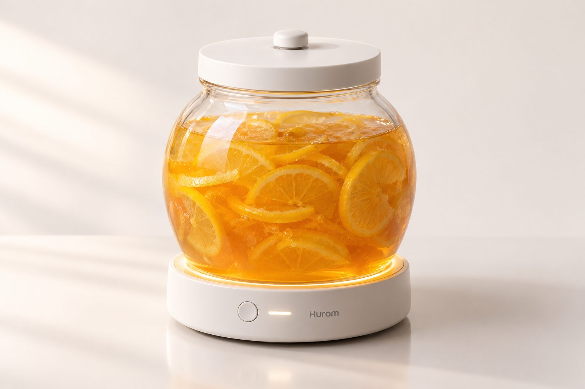
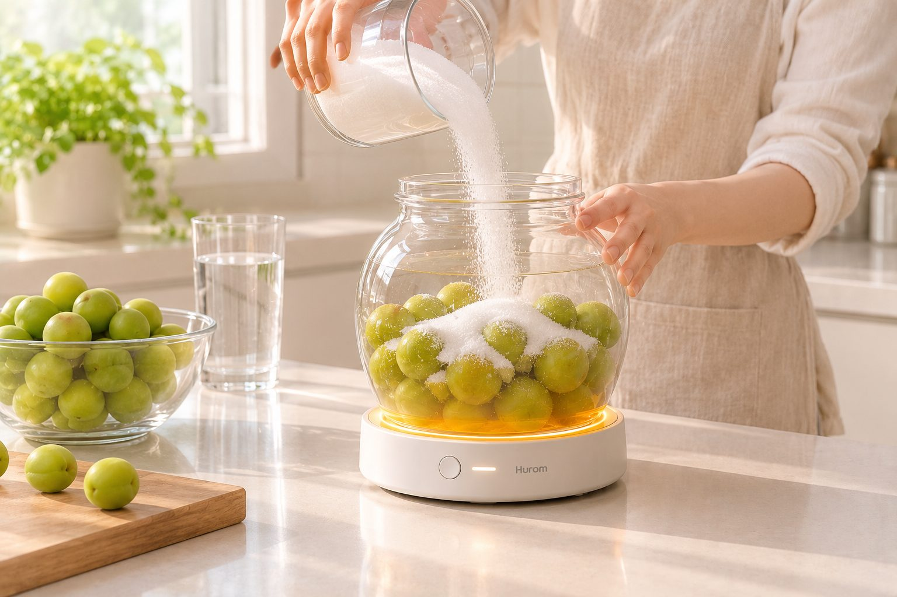

04 · 제품
통 하나, 젓개 하나, 펠티어 한 장, 버튼 하나.

01 / 대표 컷 · 시안 A
02 / 과일 먼저, 설탕은 위에약 2L유리 통 · 1회분 과일 약 800g + 설탕 약 800g · 통째 옮김
25~30 → 18~20°C녹이기 미지근 → 다 녹은 뒤 옮길 때까지 서늘(결로 때문에 15°C → 18°C로 조정, 06)
1+1품목 버튼 1개 + 빛 1줄 · 받침 빛이 단계 표시 · 앱·블루투스 없음
30분마다 1~2분바닥 자석 젓개 · 아주 천천히 · 즙이 나오기 전 처음 4~6시간은 데우기만
3묶음유자·레몬·딸기(1~2일 → 냉장고) / 매실(며칠 → 서늘한 곳) / 생강·오미자
3개씻는 부품 · 뚜껑 · 유리 통 · 젓개(통·젓개 식기세척기)
Ø19 × 23cm시안 A 바깥 크기(받침 Ø19×5 + 통 16 + 뚜껑 2) · 확정은 디자인 뒤
12V 48W외장 어댑터(KC 인증품) · 펠티어 36W + 팬·모터·LED · 서늘고·해동기 공용 후보
1넣고 누릅니다
썬 과일과 설탕(무게 1:1, 딸기 0.7~1)을 통에 넣고 뚜껑을 얹습니다. 버튼을 눌러 품목 묶음을 고르면 받침 빛이 그 색으로 켜집니다. 과일 먼저, 설탕은 위에 — 바닥 설탕층을 얇게 하기 위한 안내입니다.
2데우고, 천천히 젓습니다
처음 4~6시간은 25~30°C로 데우기만 합니다(즙이 나와 설탕이 젖을 때까지). 그 뒤 30분마다 1~2분, 바닥의 Ø6.5cm 날개가 아주 천천히 돌아 가라앉은 설탕을 녹이고 설탕물을 위로 보냅니다. 걸리면 멈췄다 거꾸로 돌고 다시 붙잡습니다. 빛은 숨 쉬듯 — 녹이는 중.
3다 녹으면 알리고, 옮길 때까지 서늘하게
품목별 시간이 지나면 세 번 깜빡 + 알림음. 유자·레몬·딸기는 「냉장고로」(냉장 2~3주), 매실·생강·오미자는 「서늘한 곳으로」(그늘진 실온 3~4개월, 식약처1). 옮기기 전까지 펠티어가 극을 바꿔 18~20°C로 식혀 둡니다. 통째 옮기면 뚜껑의 한 방향 밸브가 첫 한 달의 가스를 기계 없이 뺍니다.
 03 / 철마다 통 안의 색이 바뀝니다
03 / 철마다 통 안의 색이 바뀝니다1년 달력 — 한 철 가전이 아니라 철마다 꺼내는 가전
1월유자·레몬끝물 유자
2월생강감기철
3월딸기딸기청 · 우유
4월딸기끝물 · 값 쌀 때
5월앵두·체리소량
6월매실씨 빼면 더 안전
7월살구·자두묶음 2
8월청귤풋귤청
9월오미자물에 타기
10월모과묶음 3
11월유자·생강선물철 · 출시
12월유자·생강김장 뒤
제철은 국내 출하 시기 기준. 진한 칸이 주력 네 철. 모든 묶음에서 기계는 「녹이기까지」만 맡고, 매실·생강·오미자는 녹으면 통째 서늘한 곳으로 가서 긴 숙성을 그대로 합니다 — 기계 한 대로 매실철에 여러 통을 담글 수 있습니다.


 유자 · 주황
유자 · 주황 매실 · 초록
매실 · 초록 오미자 · 빨강
오미자 · 빨강 딸기 · 분홍
딸기 · 분홍

 단면 · 16개 부품의 자리와 치수(설계 목표). 「작대기」(유리 돌기 핀)는 속이 찬 유리이고, 그 위에 끼우는 젓개 안에 PP 캡슐로 막은 자석 6개가 들어 있습니다. 축척 아님.
단면 · 16개 부품의 자리와 치수(설계 목표). 「작대기」(유리 돌기 핀)는 속이 찬 유리이고, 그 위에 끼우는 젓개 안에 PP 캡슐로 막은 자석 6개가 들어 있습니다. 축척 아님.